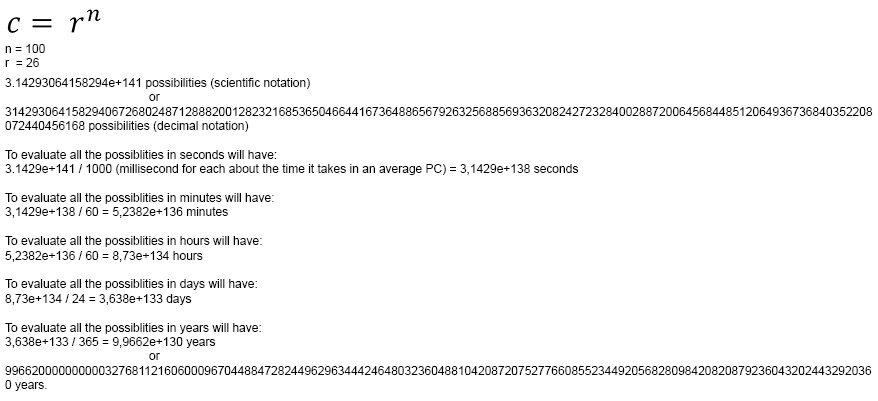
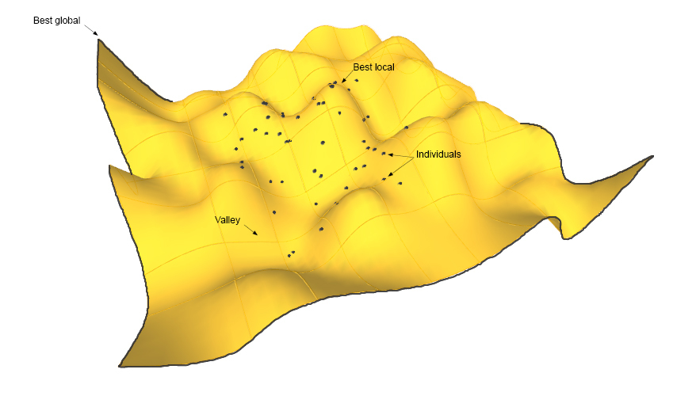

Fitness
It doesn't exist a definition for "Genetic Algorithms" accepted by all. However, most methods called GAs have at least the following elements in common:
- Population of chromosomes
- Selection according to a FITNESS FUNCTION
- Crossover with offspring
- Random mutation
The most common use for GAs is the optimization task. The goal is to find the correct values for a list of parameters in a function. The fitness function depends of the problem to optimize and can goes from a simple value to complex function. Where all the parameters are related and is not possible to maximize one of them without to minimize others.
Computer Scientist define the collection of all possible solutions to a problem as a "search space". Suppose we want to design a protein with similar performance as collagen. The search space is the collection of all possible sequences of protein with length 100 and we have 26 possible amino-acids by letters in each gen of the chromosome.
How many possible sequence we have

Since the search space is so big that use GAs is a clever idea to find a very good result. Each candidate solution might look like this:
'A, B, C, D, D, E, D, F, R, L, L, G, A...'
An algorithm exploring in this "search space" is an effective way to choose possible solutions in each generation. Genetic Algorithms combine via crossover and mutation high quality possible solutions from different regions in the "search space". The "search space" is the collection of all possible solutions to the problem, and for this case all possible amino-acids combinations to design our collagen protein.
Fitness Landscape
The fitness landscape is the "search space" representation for all possible genotypes along with their fitness. The fitness landscape can be seen as a surface with valleys and peaks. Imagine a range mountain where the population is travelling and looking for the highest peak. Valleys represents low quality solutions and the highest peak the high-quality solution in the space search.
In a range mountain is possible to find "peaks", "hills" and "valleys". Only one peak will contain the best fitness and is called Best Global or Global Optimum all the others peaks and hills are called Best Local or Local Optimum. Where their fitness is the best in the zone but not in search space. Evolution causes populations to move along the landscape in particular ways, and adaptation can be seen as a population searching the higher peaks.
Natural section, doesn't search for the best result. Only a enough good solution to keep the population "alive".
Genetic Algorithms operators crossover and mutation drive the population on the landscape defined by the fitness function. The idea of the evolution "moving" a population around a fixed landscape is not realistic for several reasons. Because, In the real world the landscape is not separated from the organisms that inhabit it. Organisms modify the landscape (environment) and the landscape modifies organisms.
Fitness landscape representation

Fitness Function
Chromosomes are usually composed by bit of strings. Each gen in the chromosome has two possibilities: 0 or 1. Each chromosome can be represented as a point in the search space of a possible solution. The GA processes populations of chromosomes successively, replacing the old's by new generations. The GAs most often requires a fitness function to determine the "performance" of each chromosome in the population. The fitness of a chromosome depends on how well a chromosome performs against a problem.
One common application of GAs is function optimization, where the goal is to find a set of parameters values that maximize a multi-parameter function or one real dimensional function.
Lets see an example from Melanie Mitchell
f(y) = y + |Sin(32y)|
The candidate solutions are the y values. Each individual is encoded as bit string representing the real numbers between (0 ≤ y < π). Therefore it is necessary to translate the bit string x into a real number y to evaluate the value. So, the fitness of x is the result of the function.
Going back to the problem, we can define the fitness as the negative of the potential energy of amino-acids sequence for a desire protein structure. The potential energy is the measure of how much physical resistance the sequence would need to be folded into a specific structure. Therefore, The lower energy, the higher fitness.
The important to understand that individuals are encoded as abstract chromosomes of numbers or letters or both. The fitness function is defined to evaluate each chromosome and assign a value to determine what is their location in the fitness landscape. Is the Chromosome in a valley?, is the chromosome in a peak?
Search Methods
We can find (at least) three search types.
Search for Sorted Data
Imagine we have a list of 1000 numbers, and is necessary find the closer to 20. {-623, -345, -34, 16, 56, 500, 845,...} we start with the -623, then we move it to -345 and so on to 16. Since the algorithm don`t know what is the next number it continues to 56, but the result is lower than 16. so the algorithm return 16 and finish the search. Binary Search is one of the most efficient methods to search in a sorted list.
Search for Paths to Objective The problem here consists in to find the correct set of actions that will move for an initial state to a given goal. This types of algorithms are the central of many artificial intelligence methods.
Search for Solutions The idea here is more abstract. Find (efficiently) a solution to a problem in a large space of candidate solutions. These are the kinds of search problems for which Genetic Algorithms are used. The cool thing here is when we search a space of candidate solutions with a GA, not all the possible solutions are created first and the evaluated. Instead,a GA is a method for finding optimal or good solutions by examining a small fraction (pollster) of the possible candidates.